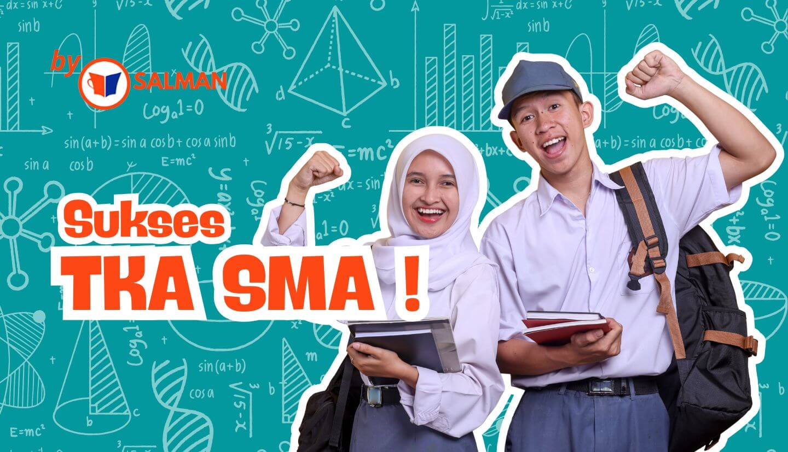
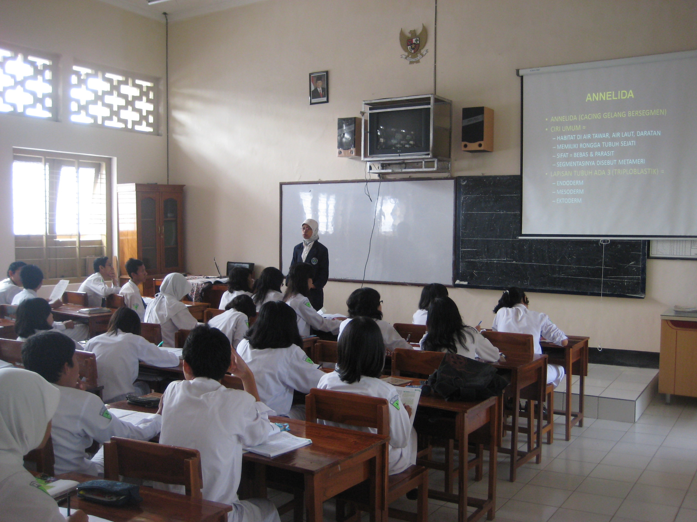
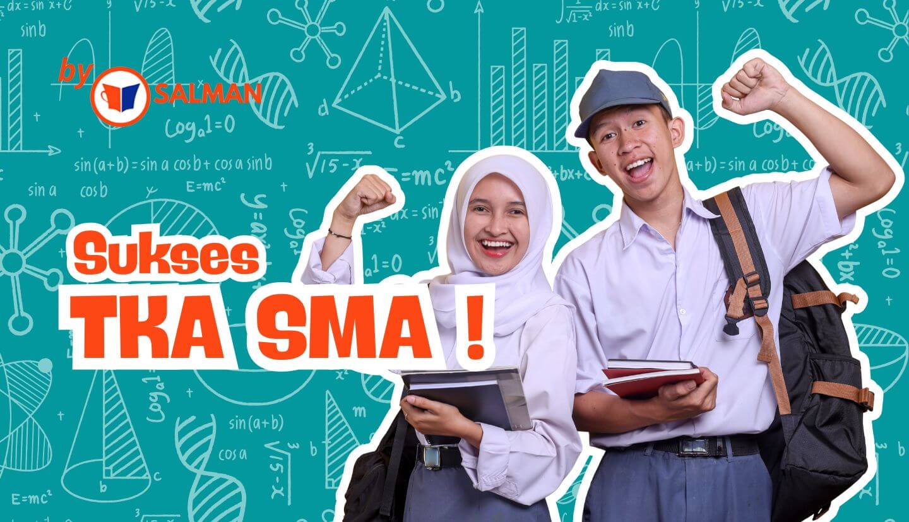
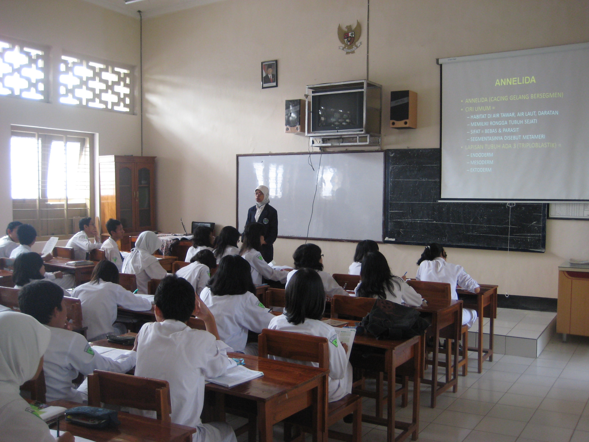

YUK KITA ANALISIS TUJUAN SDGS 4 BARENG!
Kualitas pendidikan di Indonesia tahun 2025 sekarang, masih dalam proses berkembang. Pada tahun ini, mereka memiliki fokus terhadap penguatan pendidikan karakter, pemerataan kesempatan pendidikan 13 tahun, peningkatan kualitas guru, perbaikan sarana dan prasarana pendidikan, dan peningkatan terhadap bahasa dan sastra. Puslapdik kemendikdasmen mengatakan bahwa tingkat Angka Partisipasi Sekolah (APS) pada jenjang PAUD (Pendidikan Anak Usia Dini) hanya mencapai 74,15%, dimana menurun sebanyak 1,02% dibandingkan tahun 2024. Sementara pada jenjang Sekolah Dasar (SD) dan Sekolah Menengah Pertama (SMP) mencapai 98,22% atau naik sebanyak 0,004% dibanding tahun 2024 yang mencapai 98,18%. Akan tetapi, pada jenjang Sekolah Menengah Atas (SMA), menaik hingga 74,64% dibandingkan pada tahun 2024 mencapai 73,42% (naik sebanyak 1,22%).
Selanjutnya, pemerintah pendidikan juga mengadakan beberapa program baru di tahun 2025 yang sudah dirasakan bagi murid maupun guru negeri maupun swasta. Beberapa dari program-program tersebut yakni pengembalian Ujian Nasional (UN) menjadi Tes Kemampuan Akademik (TKA), penggunaan Kurikulum Merdeka, dan penguatan pengajaran digital. TKA sempat ditiadakan pada tahun 2021, namun Menteri Pendidikan Dasar dan Menengah, Abdul Mu’ti, mengadakan TKA kembali untuk mengetes kemampuan pencapaian akademik siswa untuk tujuan-tujuan tertentu (seperti bagi kelas 9, dapat menentukan jalur SMA yang sesuai) dan secara resmi diadakan pada tahun 2026 (sekarang sudah mulai ada sebagai simulasi). Semua siswa tidak harus mengikuti TKA ini, jika iya, maka semua biaya sudah ditanggung pemerintah dan negara. Berikutnya adalah penggunaan Kurikulum Merdeka, Menteri Pendidikan Abdul Mu’ti mengadakan program ini dengan tujuan setiap guru dapat mengajar dengan sistem yang lebih kontekstual, mendalam, dan fleksibel. Tidak hanya itu, kurikulum ini juga dapat memberikan siswi untuk menyesuaikan metode pembelajaran yang lebih nyaman, sesuai minat dan bakat, serta kecepatan belajarnya.
Tujuan-tujuan penting bagi program ini adalah juga literasi, numerasi, karakter, dan keterampilan berpikir kritis. Salah satu contoh dari program tersebut adalah pembelajaran berbasis proyek dibandingkan kertas untuk mengurangi tekanan siswi. Terakhir adalah penguatan pengajaran digital, dimana Presiden Prabowo menyelenggarakan IFP (Interactive Flat Panel) sebagai alat bantu dalam pembelajaran, contohya adalah seperti smartboard dan laptop.
Tentunya program-program tersebut memiliki berbagai dampak bagi siswi maupun tenaga kependidikan. Pada TKA, dampak yang ada adalah membuat siswi mengerti lebih dalam mengenai suatu materi dibandingkan penghafalan, meningkatkan kemampuan problem-solving, dan persiapan untuk masa depan. Selain itu, bagi kurikulum merdeka, dampak-dampak yang memungkinkan adalah meningkatkan kreativitas mereka, fleksibilitas dalam mengajar bagi guru dan sekolah, serta penguatan profil pelajar Pancasila. Bagi penggunaan digitalisasi pembelajaran, dampak yang ada adalah meningkatkan antusiasme murid, kemudahan untuk mengajar, dan akses materi pembelajaran yang lebih luas. Namun, meskipun dari ketiga program tersebut memiliki dampak yang meningkatkan kualitas pendidikan di Indonesia, di zaman modern ini masih ada tantangan dan dampak negatif dari program-program tersebut. Seperti keterbatasan ekonomi untuk mendapatkannya, kesusahaan untuk beradaptasi, tekanan dari keluarga dan lingkungan sekitar, kehilangan arah/bimbingan dari guru, dan hasil yang jauh dari ekspektasi tujuan (contohnya adalah seperti TKA, seorang siswi dapat merasa tertekan secara mental dari ekspektasi orang tua sehingga lebih sering menghafal dibandingkan memahami materi sesuai metode yang diminati). Sehingga, hal ini dapat berarah ke kualitas pendidikan Indonesia yang masih menghadapi tantangan-tantangan yang masih belum sepenuhnya diselesaikan.